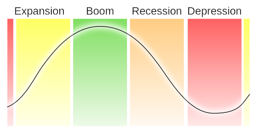

Table of Contents
28. Monetary Policy
28.1. Introduction to Monetary Policy
28.1.1. The Demand for Money
28.1.2. Shifts in the Money Demand Curve
28.1.3. The Equilibrium Interest Rate
28.2. Monetary Policy Tools
28.2.1. The Reserve Ratio
28.2.2. The Discount Rate
28.2.3. The Federal Funds Rate
28.2.4. Open Market Operations
28.2.5. Setting and Achieving the Interest Rate Target
28.2.6. Executing Expansionary Monetary Policy
28.2.7. Executing Restrictive Monetary Policy
28.2.8. The Taylor Rule
28.3. Impacts of Federal Reserve Policies
28.3.1. The Impact of Monetary Policy on Aggregate Demand, Prices, and Real GDP
28.3.2. The Effect of Expansionary Monetary Policy
28.3.3. The Effect of Restrictive Monetary Policy
28.3.4. Limitations of Monetary Policy
28.3.5. Using Monetary Policy to Target Inflation
28.4. Historical Federal Reserve Policies
28.4.1. Volcker Disinflation
28.4.2. Greenspan Era
28.4.3. Bernanke Era
28. Monetary Policy
28.1. Introduction to Monetary Policy
28.1.1. The Demand for Money
In economics, the demand for money is the desired holding of financial assets in the form of money (cash or bank deposits).
Learning Objective
Relate the level of the interest rate to the demand for money
Key Points
- Money provides liquidity which creates a trade-off between the liquidity advantage of holding money and the interest advantage of holding other assets.
- The quantity of money demanded varies inversely with the interest rate.
- While the demand of money involves the desired holding of financial assets, the money supply is the total amount of monetary assets available in an economy at a specific time.
- In the United States, the Federal Reserve System controls the money supply. The Fed has the ability to increase the money supply by decreasing the reserve requirement.
Key Terms
- money supply
- The total amount of money (bills, coins, loans, credit, and other liquid instruments) in a particular economy.
- asset
- Something or someone of any value; any portion of one's property or effects so considered.
The Demand for Money
In economics, the demand for money is generally equated with cash or bank demand deposits. Generally, the nominal demand for money increases with the level of nominal output and decreases with the nominal interest rate.
The equation for the demand for money is: M_d = P * L(R,Y). This is the equivalent of stating that the nominal amount of money demanded (M_d) equals the price level (P) times the liquidity preference function L(R,Y)--the amount of money held in easily convertible sources (cash, bank demand deposits). Specific to the liquidity function, L(R,Y), R is the nominal interest rate and Y is the real output.
Money is necessary in order to carry out transactions. However inherent to the holding of money is the trade-off between the liquidity advantage of holding money and the interest advantage of holding other assets.
When the demand for money is stable, monetary policy can help to stabilize an economy. However, when the demand for money is not stable, real and nominal interest rates will change and there will be economic fluctuations.
Impact of the Interest Rate
The interest rate is the rate at which interest is paid by a borrower (debtor) for the use of money that they borrow from a lender (creditor). It is viewed as a "cost" of borrowing money. Interest-rate targets are a tool of monetary policy. The quantity of money demanded varies inversely with the interest rate. Central banks in countries tend to reduce the interest rate when they want to increase investment and consumption in the economy. However, low interest rates can create an economic bubble where large amounts of investments are made, but result in large unpaid debts and economic crisis. The interest rate is adjusted to keep inflation, the demand for money, and the health of the economy in a certain range. Capping or adjusting the interest rate parallel with economic growth protects the momentum of the economy.
Control of the Money Supply
While the demand of money involves the desired holding of financial assets, the money supply is the total amount of monetary assets available in an economy at a specific time. Data regarding money supply is recorded and published because it affects the price level, inflation, the exchange rate, and the business cycle.
Monetary policy also impacts the money supply. Expansionary policy increases the total supply of money in the economy more rapidly than usual and contractionary policy expands the supply of money more slowly than normal. Expansionary policy is used to combat unemployment, while contractionary is used to slow inflation.
In the United States, the Federal Reserve System controls the money supply. The reserves of money are kept in Federal Reserve accounts and U.S. banks. Reserves come from any source including the federal funds market, deposits by the public, and borrowing from the Fed itself. The Fed can attempt to change the money supply by affecting the reserve requirement and through other monetary policy tools .
{kind=link}
This graph shows the fluctuations in the federal funds rate from 1954-2009. The Federal Reserve implements monetary policy through the federal funds rate.
28.1.2. Shifts in the Money Demand Curve
A shift in the money demand curve occurs when there is a change in any non-price determinant of demand, resulting in a new demand curve.
Learning Objective
Explain factors that cause shifts in the money demand curve, Explain the implications of shifts in the money demand curve
Key Points
- The real demand for money is defined as the nominal amount of money demanded divided by the price level.
- The nominal demand for money generally increases with the level of nominal output (the price level multiplied by real output).
- The demand for money shifts out when the nominal level of output increases.
- The demand for money is a result of the trade-off between the liquidity advantage of holding money and the interest advantage of holding other assets.
Key Terms
- asset
- Something or someone of any value; any portion of one's property or effects so considered.
- nominal interest rate
- The rate of interest before adjustment for inflation.
Demand for Money
In economics, the demand for money is the desired holding of financial assets in the form of money. The nominal demand for money generally increases with the level of nominal output (the price level multiplied by real output). The interest rate is the price of money. The quantity of money demanded increases and decreases with the fluctuation of the interest rate. The real demand for money is defined as the nominal amount of money demanded divided by the price level. A demand curve is used to graph and analyze the demand for money.
Factors that Cause Demand to Shift
A demand curve has the price on the vertical axis (y) and the quantity on the horizontal axis (x). The shift of the money demand curve occurs when there is a change in any non-price determinant of demand, resulting in a new demand curve. Non-price determinants are changes cause demand to change even if prices remain the same. Factors that influence prices include:
- Changes in disposable income
- Changes in tastes and preferences
- Changes in expectations
- Changes in price of related goods
- Population size
Factors that change the demand include:
- Decrease in the price of a substitute
- Increase in the price of a complement
- Decrease in consumer income if the good is a normal good
- Increase in consumer income if the good is an inferior good
The demand for money shifts out when the nominal level of output increases. It shifts in with the nominal interest rate.

The graph shows both the supply and demand curve, with quantity of money on the x-axis (Q) and the price of money as interest rates on the y-axis (P). When the quantity of money demanded increase, the price of money (interest rates) also increases, and causes the demand curve to increase and shift to the right. A decrease in demand would shift the curve to the left.
Implications of Demand Curve Shift
The demand for money is a result of the trade-off between the liquidity advantage of holding money and the interest advantage of holding other assets. The demand for money determines how a person's wealth should be held. When the demand curve shifts to the right and increases, the demand for money increases and individuals are more likely to hold on to money. The level of nominal output has increased and there is a liquidity advantage in holding on to money. Likewise, when the demand curve shifts to the left, it shows a decrease in the demand for money. The nominal interest rate declines and there is a greater interest advantage in holding other assets instead of money.
28.1.3. The Equilibrium Interest Rate
In a economy, equilibrium is reached when the supply of money is equal to the demand for money.
Learning Objective
Use the concept of market equilibrium to explain changes in the interest rate and money supply
Key Points
- The interest rate is the rate at which interest is paid by a borrower (debtor) for the use of money that they borrow from a lender (creditor).
- Factors that contribute to the interest rate include: political gains, consumption, inflation expectations, investments and risks, liquidity, and taxes.
- In the case of money supply, the market equilibrium exists where the interest rate and the money supply are balanced.
- The real interest rate measures the purchasing power of interest receipts. It is calculated by adjusting the nominal rate charge to take inflation into account.
Key Terms
- equilibrium
- The condition of a system in which competing influences are balanced, resulting in no net change.
- interest rate
- The percentage of an amount of money charged for its use per some period of time (often a year).
Interest Rate
The interest rate is the rate at which interest is paid by a borrower (debtor) for the use of money that they borrow from a lender (creditor). Equilibrium is reached when the supply of money is equal to the demand for money. Interest rates can be affected by monetary and fiscal policy, but also by changes in the broader economy and the money supply.
Factors that Influence the Interest Rate
Interest rates fluctuate over time in the short-run and long-run . Within an economy, there are numerous factors that contribute to the level of the interest rate:
{kind=link}
This graph shows the fluctuation in interest rates in Germany from 1967 to 2003. Interest rates fluctuate over time as the result of numerous factors. In Germany, the interest rates dropped from 14% in 1967 to almost 2% in 2003. This graph illustrates the fluctuations that can occur in the short-run and long-run. Interest rates fluctuate based on certain economic factors.
- Political gain: both monetary and fiscal policies can affect the money supply and demand for money.
- Consumption: the level of consumption (and changes in that level) affect the demand for money.
- Inflation expectations: inflation expectations affect a the willingness of lenders and borrowers to transact at a given interest rate. Changes in expectations will therefore affect the equilibrium interest rate.
- Taxes: changes in the tax code affect the willingness of actors to invest or consume, which can therefore change the demand for money.
Market Equilibrium
In economics, equilibrium is a state where economic forces such as supply and demand are balanced and without external influences, the equilibrium will stay the same. Market equilibrium refers to a condition where a market price is established through competition where the amount of goods and services sought by buyers is equal to the amount of goods and services produced by the sellers. In the case of money supply, the market equilibrium exists where the interest rate and the money supply are balanced. The money supply is the total amount of monetary assets available in an economy at a specific time. Without external influences, the interest rate and the money supply will stay in balance.
28.2. Monetary Policy Tools
28.2.1. The Reserve Ratio
The reserve ratio is the percentage of deposits that a bank is required to hold in reserves, or funds that are not allowed to be loaned.
Learning Objective
Identify the effects of reserve requirements on monetary policy
Key Points
- The required reserve ratio is a tool in monetary policy, given that changes in the reserve ratio directly impacts the amount of loanable funds available.
- Money growth in the economy can occur through the multiplier effect resulting from the reserve ratio.
- The higher the reserve requirement is set, the less the amount of funds banks will have to loan out, leading to lower money creation. Alternatively, the higher the reserve requirement the, lower the supply of loanable funds, the higher the interest rate and the slower the resulting economic growth.
Key Terms
- loanable funds
- Money available to be issued as debt.
- money supply
- The total amount of money (bills, coins, loans, credit, and other liquid instruments) in a particular economy.
- monetary policy
- The process by which the central bank, or monetary authority manages the supply of money, or trading in foreign exchange markets.
Banks assume responsibility for consumer deposits and make money by loaning out deposited finds. Therefore, banks with relatively higher deposits are able to supply a larger amount of loanable funds. The supply of loanable funds directly impacts growth and interest rates in an economy. Typically, an increase in the supply of loanable funds is associated with a decrease in interest rates. The greater the accessibility of loanable funds, as conferred by access and cost, the greater opportunity for businesses and consumers to make investment purchases and increase production and labor supply, respectively.
However, in economic downturns the amount of outstanding loans may be counter to a bank's longevity, as depositors may seek to cash-out holdings. In order to reduce the risk of a panic or "run on bank" from the perception that a bank may not have adequate liquidity to meet depositor access to cash deposits, central banks have adopted policies to ensure that banks use prudent judgement when assessing the amount of deposits to loan.
Reserve Ratio
The reserve ratio is a central bank regulatory tool employed by most, but not all, of the world's central banks. The ratio is a set percentage of customer deposits that a bank is required to hold in reserves, or funds that are not allowed to be loaned. Required reserves are normally in the form of cash stored physically in a bank vault (vault cash) or deposits made with a central bank. The required reserve ratio is a tool in monetary policy, given that changes in the reserve ratio directly impact the amount of loanable funds available .
The Federal Reserve is charged with maintaining sustainable economic growth. To carry out its responsibilities, the "Fed" uses policies including the reserve ratio to adjust the money supply to either incentivize growth or slow down growth, as needed.
Monetary policy tool
Money growth in the economy can occur through the multiplier effect resulting from the reserve ratio. For example, a reserve ratio of 20% will result in 80% of any given initial deposit being loaned out and if the process of loaning is assumed to continue, the maximum increase in money expansion specific to an initial deposit at a 20% reserve ratio will be equal to the reserve multiplier 1/(reserve ratio) x the initial deposit.
For example, with the reserve ratio (RR) of 20 percent, the money multiplier, m, will be calculated as:
$m = 1 \div RR$
$m = 1 \div 0.20=5$
This then signifies that any initial deposit will contribute to an expansion in money supply up to 5 times its original value.
The conventional view in economic theory is that a reserve requirement can act as a tool of monetary policy. The higher the reserve requirement is set, the theory supposes, the less the amount of funds banks will have to loan out, leading to lower money creation. Alternatively, the higher the reserve requirement the, lower the supply of loanable funds, the higher the interest rate and the slower the resulting economic growth.
28.2.2. The Discount Rate
The rate that member banks charge each other is the federal funds rate and the rate the Fed charges is referred to as the discount rate.
Learning Objective
Illustrate the effects of the discount rate on monetary policy
Key Points
- The Fed targets the rate for federal funds via its open market operations.
- The Fed seeks to be the lender of last resort by charging banks a higher rate than the federal funds rate.
- The discount rate difference over the fed funds rate can be varied by the Fed based on bank liquidity needs.
Key Terms
- fed funds rate
- Short for Federal Funds rate. The interest rate at which depository institutions actively trade balances held at the Federal Reserve, called federal funds, with each other, usually overnight, on an uncollateralized basis.
- discount rate
- An interest rate that a central bank charges to depository institutions that borrow reserves from it.
- open market operations
- An activity by a central bank to buy or sell government bonds on the open market. A central bank uses them as the primary means of implementing monetary policy.
The central bank of the United States is the Federal Reserve (the Fed). The Fed employs monetary policy through direct controls on the money supply through open market operations to achieve economic stability and growth.
Open market operations entail Fed intervention in the buying and selling of government bonds to achieve a change in the money supply and the corresponding change in the interest rate. The Fed sells bonds to reduce the money supply and increase the prevailing interest rate and buys bonds to increase the money supply and reduce the prevailing interest rate. The interest rate is an active target and is set as a target rate range by the Fed; it is conveyed to the public by the Federal Reserve Open Market Committee (FOMC) as the fed funds target rate (short for the Federal Funds rate).
Coincident with the Fed's open market operations is the Fed's selection of a reserve requirement which corresponds to a required percentage of deposits (reserves) that banks must keep on site or at the Fed on a daily basis. Given their daily activities, banks may fall short of their required daily reserve requirement. When this occurs, banks may either turn to the Fed or Fed member banks for overnight or short-term loans to satisfy their liquidity short-fall. The rate that member banks charge each other is referred to as the federal funds rate and the rate the Fed charges banks is referred to as the discount rate.
This distinction is particularly important. The discount rate is the rate that the central bank actual controls. It is the rate the central bank charges its member banks to borrow overnight. However, the rate that the central bank actually cares about is the fed funds rate. That is the rate banks charge each other, and is influenced by the discount rate.
The Fed targets the rate for federal funds via its open market operations and seeks to be the lender of last resort by charging banks a higher rate than the federal funds rate .
{kind=link}
The discount rate is higher than the fed funds target rate and the variance serves as a disincentive for banks to seek funds or short-term borrowings from the Fed.
For example, the difference or spread of the primary credit rate (rate to member banks in solid financial standing) over the FOMC's target federal funds rate was initially 1 percent. During the financial crisis, this spread was reduced to one-half of one percent on August 17, 2007, and was further reduced, to a quarter of 1 percent, on March 16, 2008.
Typically, the discount rate along with the fed funds target rate are mechanisms that the Fed uses to discourage banks from excess lending, as part of a contractionary or restrictive policy scheme. Given that lending has an expansionary effect, to the extent that the fed funds target rate and discount rate diminish the profitability of excess loaning, these parameters place limits to the expansion of the money supply via the loanable funds market. However, as noted in the aforementioned historical example, the discount rate, in conjunction with the fed funds target rate, may be purposely maintained at a lower interest level to encourage borrowing and increase growth when the economy is showing signs of either slowing or contracting. In this manner, the discount rate in tandem with the fed funds target rate are part of an expansionary policy mechanism.
28.2.3. The Federal Funds Rate
The Federal Funds rate is the interest rate at which depository institutions actively trade balances held at the Federal Reserve.
Learning Objective
Discuss the importance of the Federal Funds Rate as a monetary policy tool
Key Points
- Banks may borrow reserves from one another overnight in order to maintain their required reserve ratio. The rate of interest negotiated between banks for these loans is the Federal Funds rate.
- The Federal Funds rate is directly related to the interest rate paid by firms and individuals. If a bank can borrow reserves cheaply, it can afford to offer loans to the public at lower rates. Thus, a high Federal Funds rate is contractionary, while a low federal funds rate is expansionary.
- The Federal Reserve doesn't control the Federal Funds rate directly, but it does set a target interest rate and uses open market operations in order to achieve that rate.
- The Fed doesn't control the federal funds rate directly, but it does set a target interest rate and uses open market operations in order to achieve that rate.
Key Terms
- reserve
- Banks' holdings of deposits in accounts with their central bank.
- federal funds rate
- The interest rate at which depository institutions actively trade balances held at the Federal Reserve with each other.
The Federal Funds rate (or fed funds rate) is the interest rate at which depository institutions (primarily banks) actively trade balances held at the Federal Reserve. In the US, banks are obligated to maintain certain levels of reserves, either in the form of reserves with the Fed or as vault cash. Each day, banks receive deposits, which contribute to a bank's reserves, and issue loans, which are liabilities against the bank. These daily activities change their ratio of reserves to liabilities. If, by the end of the day, the bank's reserve ratio has dropped below the legally required minimum, it must add to its reserves in order to remain compliant with the law. Banks do this by borrowing reserves from other banks with excess reserves, and the weighted average of these interest rates paid by borrowing banks determines the federal funds rate.
The Federal Funds rate is directly related to the interest rate paid by firms and individuals. If a bank can borrow reserves cheaply, it can afford to offer loans to the public at lower rates and still make a profit. On the other hand, if the Federal Funds rate is high, banks will not borrow reserves in order to issue low-interest loans to the public. In fact, many mortgages and credit card interest rates are indexed to the Federal Funds rate - a homeowner might pay an adjustable interest rate that is set at the level of the Federal Funds rate plus four percent, for example. A high Federal Funds rate, therefore, has a contractionary effect on economic activity, while a low Federal Funds rate has an expansionary effect.
The Fed doesn't control the Federal Funds rate directly - it is negotiated between borrowing and lending banks - but it does set a target interest rate and uses open market operations in order to achieve that rate. The target Federal Funds rate is decided by the governors at the Federal Open Market Committee (FOMC) meetings, who will either increase, decrease, or leave the target rate unchanged based on the economic conditions within the country . Influencing the Federal Funds rate is the primary monetary policy tool that the Fed uses to achieve its dual mandate of stable prices and low unemployment.
{kind=link}
The graph shows the federal funds rate for the past fifty years. The peak in the 1980s reflects the contractionary monetary policy the Fed instituted to combat high levels of inflation due to oil shocks, and the low rate in the late 2000s reflects expansionary monetary policy meant to combat the effects of recession.
28.2.4. Open Market Operations
Open market operations (OMOs) are the purchase and sale of securities in the open market by a central bank.
Learning Objective
Discuss the use of open market operations to implement monetary policy
Key Points
- In the United States, the Federal Reserve Bank of New York uses open market operations to implement monetary policy.
- This occurs under the oversight of the Federal Reserve Open Market Committee (FOMC).
- The short-term objective for open market operations is specified by the FOMC and is publicly communicated following the FOMC meeting.
- Historically, the Federal Reserve has used OMOs to adjust the supply of reserve balances so as to keep the federal funds rate--the interest rate at which depository institutions lend reserve balances to other depository institutions overnight--around the target established by the FOMC.
Key Terms
- open market operations
- An activity by a central bank to buy or sell government bonds on the open market. A central bank uses them as the primary means of implementing monetary policy.
- fed funds target rate
- The interest rate at which depository institutions actively trade balances held at the Federal Reserve, called federal funds, with each other, usually overnight, on an uncollateralized basis.
The Federal Reserve has several tools at its disposal to reach its monetary policy objectives. These include the discount rate, the fed funds target rate, and the reserve requirement, and open market operations (OMOs). OMOs are considered to be the most flexible option for the Federal Reserve out of all of these.
On a general level, OMO are the purchase and sale of securities in the open market by a central bank, as a means of controlling the money supply and the related prevailing interest rate.
{kind=link}
By buying and selling US Treasury bills on the open market, the Federal Reserve hopes to change their yields, which will then affect the interest rates in the broader market.
In the United States, the Federal Reserve Bank of New York conducts open market operations. They are under the oversight of the Federal Reserve Open Market Committee (FOMC). The FOMC makes a plan for open market operations over the short term, and publicly announce it after their regularly scheduled meetings.
Historically, the Federal Reserve has used OMOs to adjust the supply of reserve balances so as to keep the federal funds rate--the interest rate at which depository institutions lend reserve balances to other depository institutions overnight--around the target established by the FOMC.
OMO Mechanism
OMOs are typically either expansionary or contractionary in nature. In an expansionary platform, the OMO will seek to increase the money supply and reduce interest rates in order to promote economic growth. In a contractionary scheme, the OMO will seek to reduce the money supply and increase interest rates in an effort to deter economic growth. Therefore, the implementation of contractionary policy will result in the selling of bonds (cash in exchange for debt holding) and an expansionary policy (buy bonds in exchange for cash) will result in an increase in the money supply at a lower interest rate as a means to enhance growth opportunities and revitalize the economy.
The interest rate targeted through the OMO manipulation of the money supply is the fed funds target rate or the rate that member Fed banks charge one another for overnight loans. The target rate is important monetary tool from the perspective that the higher the fed funds rate relative to the return on loanable funds, the greater the incentive for banks to meet their reserve requirement (the bank will lose money) thereby placing limits on the growth of the money supply through the loanable funds market. In addition to this direct interest rate channel, the fed funds rate influences many other interest rates in the economy and by so doing contributed to either incentivizing borrowing for growth or disincentivizing the same.
28.2.5. Setting and Achieving the Interest Rate Target
The Federal Reserve (Fed) has an ability to directly influence economic growth and stability through the use of monetary policy.
Learning Objective
Describe the way in which the Federal Reserve targets the interest rate
Key Points
- Though the Fed can directly influence the money supply through open market operations, the majority of the Fed's activities seek to target interest rates, the outcome of changes in money supply.
- Using its open market channel, the Fed buys government bonds to increase the money supply and sells the same bonds to reduce it.
- The Fed actively adjusts the buying and selling of bonds to achieve the target interest rate. This in turn impacts the rate that Fed member banks are willing to charge each other for overnight loans, or the fed funds rate.
Key Terms
- reserve ratio
- A central bank regulation employed by most, but not all, of the world's central banks, that sets the minimum fraction of customer deposits and notes that each commercial bank must hold as reserves (rather than lend out).
- open market operations
- An activity by a central bank to buy or sell government bonds on the open market. A central bank uses them as the primary means of implementing monetary policy.
- fed funds rate
- Short for Federal Funds rate. The interest rate at which depository institutions actively trade balances held at the Federal Reserve, called federal funds, with each other, usually overnight, on an uncollateralized basis.
The Federal Reserve (Fed) has an ability to directly influence economic growth and stability through the use of monetary policy. Though the central bank can directly influence the money supply the majority of its activities center around interest rates, the outcome of changes to the money supply.
Interest Rate Mechanism
The Fed can set a reserve ratio, which is in effect the required reserves (percentage of deposits) that a bank must hold either on site or at the Fed. The requirement must be satisfied on a daily basis. However, given daily bank dynamics of withdrawals, deposits and loan of funds some banks may fall short of their daily reserve requirement. For banks in need of reserve funds, the overnight or short-term bank loan market is available.
Banks can seek to borrow from other banks holding funds at the Fed. The rate that Fed member banks charge one another is referred to as the Federal Funds rate, or Fed Funds rate for short (rate for funds held at the Fed). The rate is indirectly influenced and targeted by the Fed via a direct channel of open market operations and is communicated to the public as a Fed Funds target range as a standard part of the Fed Open Market Committee communications. It is important to note that the Fed does not set the fed funds target rate, it only issues a range that it targets through active management of the money supply.
Using its open market channel, the Fed buys government bonds to increase the money supply and sells the same bonds to reduce it. Adding to the money supply will typically lead to lower interest rates, while reducing the money supply will increase interest rates. The Fed actively adjusts the buying and selling of bonds to achieve the target interest rate. This in turn impacts the rate that Fed member banks are willing to charge each other for overnight loans, or the Fed Funds rate. The fed funds rate will be within the range of the target; if not the Fed will adjust its open market operations (buying and selling of bonds) to achieve the range .
{kind=link}
The graphic depicts the movement in the effective federal funds target rate. The target rate has historically been set in terms of a range; the current range as depicted in the graph is 0.00 to 0.25 percent.
28.2.6. Executing Expansionary Monetary Policy
Central banks initiate expansionary policy during periods of economic slowing, increasing the money supply and reducing interest rates.
Learning Objective
Explain common expansionary monetary policy tools
Key Points
- In an expansionary policy regime, the Fed would reduce the reserve requirement, thereby effectively increasing the amount of loans that a bank can issue.
- Expansionary monetary policy will seek to reduce the fed funds target rate (a range).
- In an expansionary policy regime, the Fed purchases government securities via open market operations from a bank in exchange for cash; the Fed's purchase increases the supply of reserves (money) to the banking system, and the federal funds rate (interest rate) falls.
Key Terms
- reserve requirement
- The minimum amount of deposits each commercial bank must hold (rather than lend out).
- open market operations
- An activity by a central bank to buy or sell government bonds on the open market. A central bank uses them as the primary means of implementing monetary policy.
- fed funds rate
- Short for Federal Funds rate. The interest rate at which depository institutions actively trade balances held at the Federal Reserve, called federal funds, with each other, usually overnight, on an uncollateralized basis.
Monetary policy is based on the relationship between money supply and interest rates, where the interest rate is essentially the price of money. The two variables have an inverse relationship. As a result, as the money supply in an economy is increased, the interest rate will generally decrease and if the money supply is contracted, interest rates will generally increase .
{kind=link}
As money supply increases, the interest rate decreases, as depicted in the graph above.
The money supply is a monetary policy mechanism available to a central bank as part of its mandate to promote economic growth and maintain full employment. Central banks use monetary policy to stabilize the economy; during periods of economic slowing central banks initiate expansionary policy, whereby the bank increases the money supply in order to lower prevailing interest rates. As the cost of money falls the demand for funds increases, thereby expanding consumer and investment spending and promoting economic growth.
Expansionary policy
An active expansionary policy increases the size of the money supply, decreasing the interest rate. Central banks can increase the money supply through open market operations and changes in the reserve requirement.
Bank reserves
Banks and other depository institutions are required to keep a certain amount of funds in reserve in order to maintain enough liquidity to meet unexpected demand for deposits. Banks can keep these reserves as cash in their vaults or as deposits with the Federal Reserve (the Fed). By adjusting the reserve requirement, the Fed can effectively change the availability of loanable funds.
In an expansionary policy regime, the Fed would reduce the reserve requirement. Banks would be able to issue more loans with the same reserves, thereby increasing the supply of money and the level of economic activity and investment.
Federal Funds market
From day to day, the amount of reserves a bank wants to hold may change as its deposits and transactions change. When a bank needs additional reserves on a short-term basis, it can borrow them from other banks that happen to have more reserves than they need. These loans take place in a private financial market called the federal funds market.
The interest rate on the overnight borrowing of reserves is called the Federal Funds rate or simply the "fed funds rate." It adjusts to balance the supply of and demand for reserves. For example, if the supply of reserves in the fed funds market is greater than the demand, then the funds rate falls, and if the supply of reserves is less than the demand, the funds rate rises.
At a lower fed funds rate, banks are more likely to increase loans, thereby expanding investment activity (in factories, for example, not financial instruments) and promoting economic growth.
Expansionary monetary policy will seek to reduce the fed funds target rate (a range). The Fed does not control this rate directly but does control the interest rate indirectly through open market operations.
Open market operations
The major tool the Fed uses to affect the supply of reserves in the banking system is open market operations—that is, the Fed buys and sells government securities on the open market. These operations are conducted by the Federal Reserve Bank of New York.
In an expansionary policy regime, the Fed purchases government securities from a bank in exchange for cash. Payment for the bonds increases the bank's reserves. As a result, the bank may have more reserves than required. The bank can lend these unneeded reserves to another bank in the federal funds market. Thus, the Fed's open market purchase increased the supply of reserves (money) to the banking system, and the federal funds rate (interest rate) falls.
28.2.7. Executing Restrictive Monetary Policy
The central bank may initiate a contractionary or restrictive monetary policy to slow growth.
Learning Objective
Explain common restrictive monetary policy tools
Key Points
- In a contractionary policy regime, the Fed may increase the reserve requirement, thereby effectively restricting the funds that banks have available for loans.
- Restrictive monetary policy will seek to increase the fed funds rate, which is the interest banks charge on loans to other banks.
- In a contractionary policy regime, the Fed uses open market operations to sell government securities from a bank in exchange for cash and thereby reduce the money supply and increase interest rates.
Key Term
- full employment
- A state when an economy has no cyclical or deficient-demand unemployment.
Monetary policy is based on the relationship between money supply and interest rates, where the interest rate is the price of money. The interest rate, therefore, has an inverse relationship with the money supply. As a result, as the money supply in an economy is decreased, the interest rate is assumed to increase and if the money supply is increased, interest rates are typically assumed to decrease .
{kind=link}
Contractionary monetary policy results in a reduction in the money supply, depicted as a leftward shift, which results in an increase in interest rates as well as a decrease in the quantity of loanable funds.
The money supply is a monetary policy mechanism available to a central bank as part of its initiatives to promote economic growth and maintain full employment. Central banks use monetary policy to stabilize the economy; during periods of economic slowing central banks initiate expansionary policy, whereby the bank increases the money supply in order to lower prevailing interest rates. As the cost of money falls, economic theory assumes that the demand for funds will increase, thereby expanding consumer and investment spending and promoting economic growth. During periods where the economy is showing signs of growing too quickly or operating above full employment, the central bank may initiate a contractionary or restrictive monetary policy by reducing the money supply and allowing interest rates to increase and economic growth to slow.
Restrictive policy
An active contractionary policy restricts the size of the money supply, increasing the interest rate. Central banks can decrease the money supply through open market operations and changes in the reserve requirement.
Bank reserves
Banks and other depository institutions keep a certain amount of funds in reserve to meet unexpected outflows. Banks can keep these reserves as cash in their vaults or as deposits with the Fed. By adjusting the reserve requirement, the Fed can effectively change the availability of loanable funds.
In a contractionary policy regime, the Fed would increase the reserve requirement, thereby effectively restricting the funds that banks have available for loans.
Federal funds market
From day to day, the amount of reserves a bank wants to hold may change as its deposits and transactions change. When a bank needs additional reserves on a short-term basis, it can borrow them from other banks that happen to have more reserves than they need. These loans take place in a private financial market called the federal funds market.
The interest rate on the overnight borrowing of reserves is called the federal funds rate or simply the "funds rate." It adjusts to balance the supply of and demand for reserves. For example, if the supply of reserves in the fed funds market is lower than the demand, then the funds rate increases.
At higher fed funds rates, banks are more likely to limit borrowing and their provision of loanable funds, thereby decreasing access to loanable funds and reducing economic growth.
Restrictive monetary policy will seek to increase the fed funds target rate. The Fed does not control this rate directly but does control the interest rate indirectly through open market operations.
Open market operations
The major tool the Fed uses to affect the supply of reserves in the banking system is open market operations—that is, the Fed buys and sells government securities on the open market. These operations are conducted by the Federal Reserve Bank of New York.
In a contractionary policy regime, the Fed sells government securities from a bank in exchange for cash. Payment for the bonds decreases the bank's reserves, reducing the supply of funds that the bank has for loans. The Fed's open market purchase decreases the supply of reserves (money) to the banking system, and the federal funds rate (interest rate) increases. In net, this reduces the financial resources available to stimulate growth and leads to a contraction in the economy.
28.2.8. The Taylor Rule
Taylor's rule was designed to provide monetary policy guidance for how a central bank should set short-term interest rates.
Learning Objective
Explain the Taylor Rule and its use by central banks
Key Points
- The rule states that the real short-term interest rate (that is, the interest rate adjusted for inflation) should be determined according to three factors.
- The rule recommends a relatively high interest rate (contractionary monetary policy) when inflation is above its target or when the economy is above its full employment level.
- The rule recommends a relatively low interest rate (expansionary monetary policy) when inflation is below its target or when the economy is below its full employment level.
Key Term
- Taylor Rule
- A way of determining the appropriate change in interest rates for a given change in inflation.
The Taylor rule is a formula developed by Stanford economist John Taylor. It was designed to provide monetary policy guidance for the Federal Reserve. The formula suggests short-term interest rates depending on changing economic conditions, in order to keep the economy stable in the short term, and minimize inflation over the long term.
The rule stipulates how much a central bank should change the nominal interest rate (real rate plus inflation) in response to changes in inflation, output, or other economic conditions. In particular, the rule stipulates that for each one-percent increase in inflation, the central bank should raise the nominal interest rate by more than one percentage point.
Stanford University Professor John Taylor is the creator of the Taylor Rule, a monetary policy instrument developed to promote stable economic growth and limit short-run economic disruption related to inflation.The factors that the Taylor rule suggests taking into account when setting inflation-adjusted short-term interest rates are:
- the level of actual inflation relative to the target,
- how far economic activity is above or below its "full employment" level, and
- what the level of the short-term interest rate is that would be consistent with full employment.
The Taylor rule advocates setting interest rates relatively high (contractionary policy) when inflation is high or when the employment rate exceeds the economy's full employment level. Expansionary policies with low interest rates are recommended by the Taylor rule in times when the economy is slow (i.e. unemployment is high, or inflation is low).
The Taylor rule doesn't always provide an easy answer. For example, in times of stagflation, inflation may be high while unemployment is also high. However, the Taylor rule can still provide a handy "rule of thumb" to policy makers on how to balance these conflicting issues when setting the interest rates.
The Taylor rule fairly accurately demonstrates how monetary policy has been conducted under recent leaders of the Federal Reserve, such as Volker and Greenspan. However, the Federal Reserve does not follow the Taylor rule as an explicit policy.
28.3. Impacts of Federal Reserve Policies
28.3.1. The Impact of Monetary Policy on Aggregate Demand, Prices, and Real GDP
Changes in a country's money supply shifts the country's aggregate demand curve.
Learning Objective
Recognize the impact of monetary policy on aggregate demand
Key Points
- Aggregate demand (AD) is the sum of consumer spending, government spending, investment, and net exports.
- The AD curve assumes that money supply is fixed.
- The decrease in the money supply is mirrored by an equal decrease in the nominal output, otherwise known as Gross Domestic Product (GDP).
- The decrease in the money supply will lead to a decrease in consumer spending. This decrease will shift the AD curve to the left.
- The increase in the money supply is mirrored by an equal increase in nominal output, or Gross Domestic Product (GDP).
- The increase in the money supply will lead to an increase in consumer spending. This increase will shift the AD curve to the right.
- Increased money supply causes reduction in interest rates and further spending and therefore an increase in AD.
Key Term
- aggregate demand
- The the total demand for final goods and services in the economy at a given time and price level.
Aggregate demand (AD) is the total demand for final goods and services in the economy at a given time and price level. It is the combination of consumer spending, investments, government spending, and net exports within a given economic system (often written out as AD = C + I + G + nX). As a result of this, increases in overall capital within an economy impacts the aggregate spending and/or investment. This creates a relationship between monetary policy and aggregate demand.
This brings us to the aggregate demand curve. It specifies the amounts of goods and services that will be purchased at all possible price levels. This is the demand for the gross domestic product of a country. It is also referred to as the effective demand.
The aggregate demand curve illustrates the relationship between two factors - the quantity of output that is demanded and the aggregated price level. Another way of defining aggregate demand is as the sum of consumer spending, government spending, investment, and net exports. The aggregate demand curve assumes that money supply is fixed. Altering the money supply impacts where the aggregate demand curve is plotted.
Contractionary Monetary Policy
Contractionary monetary policy decreases the money supply in an economy . The decrease in the money supply is mirrored by an equal decrease in the nominal output, otherwise known as Gross Domestic Product (GDP). In addition, the decrease in the money supply will lead to a decrease in consumer spending. This decrease will shift the aggregate demand curve to the left. This reduction in money supply reduces price levels and real output, as there is less capital available in the economic system.

This graph shows the effect of expansionary monetary policy, which shifts aggregate demand (AD) to the right.
Expansionary Monetary Policy
Expansionary monetary policy increases the money supply in an economy. The increase in the money supply is mirrored by an equal increase in nominal output, or Gross Domestic Product (GDP). In addition, the increase in the money supply will lead to an increase in consumer spending. This increase will shift the aggregate demand curve to the right.
In addition, the increase in money supply would lead to movement up along the aggregate supply curve. This would lead to a higher prices and more potential real output.
28.3.2. The Effect of Expansionary Monetary Policy
An expansionary monetary policy is used to increase economic growth, and generally decreases unemployment and increases inflation.
Learning Objective
Analyze the effects of expansionary monetary policy
Key Points
- The primary means a central bank uses to implement an expansionary monetary policy is through purchasing government bonds on the open market.
- Another way to enact an expansionary monetary policy is to increase the amount of discount window lending.
- A third method of enacting a expansionary monetary policy is by decreasing the reserve requirement.
Key Terms
- unemployment
- The state of being jobless and looking for work.
- expansionary monetary policy
- Traditionally used to try to combat unemployment in a recession by lowering interest rates in the hope that easy credit will entice businesses into expanding.
Monetary policy is referred to as either being expansionary or contractionary. Expansionary policy seeks to accelerate economic growth, while contractionary policy seeks to restrict it. Expansionary policy is traditionally used to try to combat unemployment in a recession by lowering interest rates in the hope that easy credit will entice businesses into expanding. This is done by increasing the money supply available in the economy.
Expansionary policy attempts to promote aggregate demand growth. As you may remember, aggregate demand is the sum of private consumption, investment, government spending and imports. Monetary policy focuses on the first two elements. By increasing the amount of money in the economy, the central bank encourages private consumption. Increasing the money supply also decreases the interest rate, which encourages lending and investment. The increase in consumption and investment leads to a higher aggregate demand.
It is important for policymakers to make credible announcements. If private agents (consumers and firms) believe that policymakers are committed to growing the economy, the agents will anticipate future prices to be higher than they would be otherwise. The private agents will then adjust their long-term plans accordingly, such as by taking out loans to invest in their business. But if the agents believe that the central bank's actions are short-term, they will not alter their actions and the effect of the expansionary policy will be minimized.
The Basic Mechanics of Expansionary Monetary Policy
A central bank can enact an expansionary monetary policy several ways. The primary means a central bank uses to implement an expansionary monetary policy is through open market operations. Commonly, the central bank will purchase government bonds, which puts downward pressure on interest rates. The purchases not only increase the money supply, but also, through their effect on interest rates, promote investment.
Because the banks and institutions that sold the central bank the debt have more cash, it is easier for them to make loans to its customers. As a result, the interest rate for loans decrease. Businesses then, presumably, use the money it borrowed to expand its operations. This leads to an increase in jobs to build the new facilities and to staff the new positions.
The increase in the money supply is inflationary, though it is important to note that, in practice, different monetary policy tools have different effects on the level of inflation.
Other Methods of Enacting Expansionary Monetary Policy
Another way to enact an expansionary monetary policy is to increase the amount of discount window lending. The discount window allows eligible institutions to borrow money from the central bank, usually on a short-term basis, to meet temporary shortages of liquidity caused by internal or external disruptions. Decreasing the rate charged at the discount window, the discount rate, will not only encourage more discount window lending, but will put downward pressure on other interest rates. Low interest rates encourage investment .
{kind=link}
The Bank of England (the central bank in England) undertook expansionary monetary policy and lowered interest rates, promoting investment.
Another method of enacting a expansionary monetary policy is by decreasing the reserve requirement. All banks are required to have a certain amount of cash on hand to cover withdrawals and other liquidity demands. By decreasing the reserve requirement, more money is made available to the economy at large.
28.3.3. The Effect of Restrictive Monetary Policy
A restrictive monetary policy will generally increase unemployment and decrease inflation.
Learning Objective
Analyze the effects of restrictive monetary policy
Key Points
- Another way to enact a restrictive monetary policy is to decrease the amount of discount window lending.
- A final method of enacting a restrictive monetary policy is by increasing the reserve requirement.
- The primary means a central bank uses to implement an expansionary monetary policy is through open market operations. The central bank can issue or resell its debt in exchange for cash. It can also sell off some of its reserves in gold or foreign currencies.
Key Term
- contractionary monetary policy
- Central bank actions designed to slow economic growth.
Monetary policy is can be classified as expansionary or restrictive (also called contractionary). Restrictive monetary policy expands the money supply more slowly than usual or even shrinks it, while and expansionary policy increases the money supply. It is intended to slow economic growth and/or inflation in order to avoid the resulting distortions and deterioration of asset values
{kind=link}
Restrictive monetary policy is used during expansion and boom periods in the business cycle to prevent the overheating of the economy.
Contractionary policy attempts to slow aggregate demand growth. As you may remember, aggregate demand is the sum of private consumption, investment, government spending and imports. Monetary policy focuses on the first two elements. By decreasing the amount of money in the economy, the central bank discourages private consumption. Increasing the money supply also increase the interest rate, which discourages lending and investment. The higher interest rate also promotes saving, which further discourages private consumption. The decrease in consumption and investment leads to a decrease in growth in aggregate demand.
It is important for policymakers to make credible announcements. If private agents (consumers and firms) believe that policymakers are committed to limiting inflation through restrictive monetary policy, the agents will anticipate future prices to be lower than they would be otherwise. The private agents will then adjust their long-term strategies accordingly, such as by putting plans to expand their operations on hold. But if the agents believe that the central bank's actions will soon be reversed, they may not alter their actions and the effect of the contractionary policy will be minimized.
The Basic Mechanics of Expansionary Monetary Policy
A central bank can enact a contractionary monetary policy several ways. The primary means a central bank uses to implement an expansionary monetary policy is through open market operations. The central bank can issue debt in exchange for cash. This results in less cash being in the economy.
Because the banks and institutions that purchased the debt from the central bank have less cash, it is harder for them to make loans to its customers. As a result, the interest rate for loans increase. Businesses then, presumably, have less money to use to expand its operations or even maintain its current levels. This could lead to an increase in unemployment.
The higher interest rates also can slow inflation. Consumption and investment are discouraged, and market actors will choose to save instead of circulating their money in the economy. Effectively, the money supply is smaller, and there is reduced upward pressure on prices since demand for consumption goods and services has dropped.
Other Methods of Enacting Restrictive Monetary Policy
Another way to enact a contractionary monetary policy is to decrease the amount of discount window lending. The discount window allows eligible institutions to borrow money from the central bank, usually on a short-term basis, to meet temporary shortages of liquidity caused by internal or external disruptions
A final method of enacting a contractionary monetary policy is by increasing the reserve requirement. All banks are required to have a certain amount of cash on hand to cover withdrawals and other liquidity demands. By increasing the reserve requirement, less money is made available to the economy at large.
28.3.4. Limitations of Monetary Policy
Limitations of monetary policy include liquidity traps, deflation, and being canceled out by other factors.
Learning Objective
Describe obstacles to the Federal Reserve's monetary policy objectives
Key Points
- A liquidity trap is a situation where injections of cash into the private banking system by a central bank fail to lower interest rates and therefore fail to stimulate economic growth.
- Deflation is a decrease in the general price level of goods and services. Deflation is a problem in a modern economy because it increases the real value of debt and may aggravate recessions and lead to a deflationary spiral.
- Fiscal policy can also directly influence employment and economic growth. If these two policies do not work in concert, they can cancel each other out.
Key Term
- deflation
- A decrease in the general price level, that is, in the nominal cost of goods and services.
Monetary policy is the process by which the monetary authority of a country controls the supply of money with the purpose of promoting stable employment, prices, and economic growth. Monetary policy can influence an economy but it cannot control it directly. There are limits as to what monetary policy can accomplish. Below are some of the factors that can make monetary policy less effective.
Multiple Factors Influencing Economy
While monetary policy can influence the elements listed above, it is not the only thing that does. Fiscal policy can also directly influence employment and economic growth. If these two policies do not work in concert, they can cancel each other out. This is an especially significant problem when fiscal policy and monetary policy are controlled by two different parties. One party might believe that the economy is teetering on recession and may pursue an expansionary policy. The other group may believe the economy is booming and pursue a contractionary policy. The result is that the two would cancel each other, so that neither would influence the direction of the economy.
Liquidity Trap
A liquidity trap is a situation where injections of cash into the private banking system by a central bank fail to lower interest rates and therefore fail to stimulate economic growth . Usually central banks try to lower interest rates by buying bonds with newly created cash. In a liquidity trap, bonds pay little to no interest, which makes them nearly equivalent to cash. Under the narrow version of Keynesian theory in which this arises, it is specified that monetary policy affects the economy only through its effect on interest rates. Thus, if an economy enters a liquidity trap, further increases in the money stock will fail to further lower interest rates and, therefore, fail to stimulate.
{kind=link}
Sometimes, when the money supply is increased, as shown by the Liquidity Preference-Money Supply (LM) curve shift, it has no impact on output (GDP or Y) or on interest rates. This is a liquidity trap.
A liquidity trap is caused when people hoard cash because they expect an adverse event such as deflation, insufficient aggregate demand, or war. Signature characteristics of a liquidity trap are short-term interest rates that are near zero and fluctuations in the monetary base that fail to translate into fluctuations in general price levels.
Deflation
Deflation is a decrease in the general price level of goods and services. Deflation occurs when the inflation rate falls below 0%. This should not be confused with disinflation, a slowdown in the inflation rate. Inflation reduces the real value of money over time; conversely, deflation increases the real value of money. This allows one to buy more goods with the same amount of money over time.
From a monetary policy perspective, deflation occurs when there is a reduction in the velocity of money and/or the amount of money supply per person. The velocity of money is the frequency at which one unit of currency is used to purchase domestically-produced goods and services within a given time period. In other words, it is the number of times one dollar is spent to buy goods and services per unit of time. If the velocity of money is increasing, then more transactions are occurring between individuals in an economy.
Deflation is a problem in a modern economy because it increases the real value of debt and may aggravate recessions and lead to a deflationary spiral. If monetary policy is too contractionary for too long, deflation could set in.
28.3.5. Using Monetary Policy to Target Inflation
Inflation targeting occurs when a central bank attempts to steer inflation towards a set number using monetary tools.
Learning Objective
Assess the use of inflation targets and goals in monetary policy
Key Points
- Because interest rates and the inflation rate tend to be inversely related, the likely moves of the central bank to raise or lower interest rates become more transparent under the policy of inflation targeting.
- If inflation appears to be above the target, the bank is likely to raise interest rates; if inflation appears to be below the target, the bank is likely to lower interest rates.
- Increases in inflation, measured by the consumer price index (CPI), are not necessarily coupled to any factor internal to country's economy and strictly or blindly adjusting interest rates will potentially be ineffectual and restrict economic growth when it was not necessary to do so.
Key Term
- consumer price index
- A statistical estimate of the level of prices of goods and services bought for consumption purposes by households.
Inflation targeting is an economic policy in which a central bank estimates and makes public a projected, or "target", inflation rate and then attempts to steer actual inflation towards the target through the use of interest rate changes and other monetary tools .
{kind=link}
The United States Federal Reserve uses a form of inflation targeting when coordinating its monetary policy.
Because interest rates and the inflation rate tend to be inversely related, the likely moves of the central bank to raise or lower interest rates become more transparent under the policy of inflation targeting. Examples include:
- if inflation appears to be above the target, the bank is likely to raise interest rates. This usually has the effect over time of cooling the economy and bringing down inflation;
- if inflation appears to be below the target, the bank is likely to lower interest rates. This usually has the effect over time of accelerating the economy and raising inflation.
Under the policy, investors know what the central bank considers the target inflation rate to be and therefore may more easily factor in likely interest rate changes in their investment choices. This is viewed by inflation targeters as leading to increased economic stability.
The United States Federal Reserve, the country's central bank, practices a version of inflation targeting. Instead of setting a specific number, the Fed sets a target range.
Criticisms of Inflation Targeting
Increases in inflation, measured by changes in the consumer price index (CPI), are not necessarily coupled to any factor internal to country's economy. Strictly or blindly adjusting interest rates will potentially be ineffectual and restrict economic growth when it was not necessary to do so.
It has been argued that focusing on inflation may inhibit stable employment and exchange rates. Supporters of a nominal income target also criticize the tendency of inflation targeting to ignore output shocks by focusing solely on the price level. They argue that a nominal income target is a better goal.
28.4. Historical Federal Reserve Policies
28.4.1. Volcker Disinflation
Paul Volcker, the 12th Chairman of the Federal Reserve, became known for lowering the inflation rate and achieving price stability.
Learning Objective
Evaluate the benefits and consequences of Paul Volcker's actions as chairman of the Federal Reserve Board of Governors
Key Points
- During his time as the chairman of the Fed, Volcker is credited with ending the high levels of inflation that the United States experienced during the 1970s and early 1980s.
- When he became chairman in 1979, inflation was high and peaked in 1981 at 13.5%. However, due to the work of Volcker and the rest of the board, the inflation rate dropped to 3.2% by 1983.
- Volcker raised the federal funds rate from 11.2% in 1979 to 20% in June of 1981. The unemployment rate became higher than 10% during this time as well.
- Volcker chose to enact a policy of preemptive restraint during the economic upturn which increased the real interest rates.
- Despite his level of success, Volcker's Federal Reserve board drew some of the strongest political attacks and protests in the history of the Federal Reserve. The protests were a result of the negative effects that the high interest rates had on the construction and farming industries.
Key Terms
- stagflation
- Inflation accompanied by stagnant growth, unemployment, or recession.
- inflation
- An increase in the general level of prices or in the cost of living.
Paul Volcker
Paul Volcker is an American economist who was appointed by President Carter in 1979 to be the 12th Chairman of the Federal Reserve of the United States (the Fed). He was reappointed by President Reagan and served as chairman until August of 1987. During his time as the Chairman of the Fed, Volcker is credited with ending the high levels of inflation that the United States experienced during the 1970s and early 1980s . Volcker was also appointed as the chairman of the Economic Recovery Advisory Board under President Obama from 2009 to 2011.
Paul Volcker was the 12th Chairman of the Federal Reserves. He became known for decreasing inflation during the early 1980s.
Benefits During Volcker's Tenure
During his time as chairman, Paul Volcker led the Federal Reserve board and helped to end the stagflation crisis of the 1970s. The inflation rate had remained high throughout the 1970s, while the growth rate was slow and the unemployment was high. When he became chairman in 1979, inflation was high and peaked in 1981 at 13.5%. However, due to the work of Volcker and the rest of the board, the inflation rate dropped to 3.2% by 1983.
Volcker raised the federal funds target rate from 11.2% in 1979 to 20% in June of 1981. The unemployment rate became higher than 10% during this time as well. The economy was restored by 1982 as a result of the tight-money policy put in place by the Fed. Volcker chose to enact a policy of preemptive restraint during the economic upturn which increased the real interest rates. Volcker's policy also pushed the President and Congress to adopt a plan to balance the budget. Volcker's tenure as the chairman of the Federal Reserve resulted in sound monetary and fiscal integrity that achieved the goal of price stability.
Consequences From Volcker's Tenure
Despite his level of success in certain areas, Volcker's Federal Reserve board drew some of the strongest political attacks and protests in the history of the Federal Reserve. The protests were a result of the negative effects that the high interest rates had on the construction and farming industries. Nobel laureate Joseph Stiglitz explained "Paul Volcker, the previous Fed Chairman known for keeping inflation under control, was fired because the Reagan Administration didn't believe he was an adequate deregulator. "
Despite the protests, Paul Volcker was respected for the work that he did while he was the chairman of the Federal Reserve. Congressman Ron Paul was a harsh critic of the Fed, but he commented about Volcker by saying, "If I had to name a Federal Reserve chairman that did a little bit of good, that would be Paul Volcker. " Volcker received the U.S. Senator John Heinz Award for Greatest Public Service by an elected or Appointed Official in 1983.
28.4.2. Greenspan Era
Alan Greenspan was Chairman of the Federal Reserve from 1987 to 2006.
Learning Objective
Summarize the actions taken during Alan Greenspan's tenure as chairman of the Federal Reserve Board of Governors
Key Points
- In 1987, Greenspan stated that the Fed was ready "to serve as a source of liquidity to support the economic and financial system" following the stock market crash.
- Greenspan influenced each presidency during his tenure as chairman. He provided economic consultation for President Clinton and assisted in the deficit reduction program in 1993.
- He raised interest rates several times in 2000 which was likely this cause of the bursting of the dot-com bubble. In 2001, Greenspan began to lower interest rates. By 2004, the Federal Funds rate was 1%.
- In 2004, Greenspan urged homeowners to take out ARMS. Over the next two years, the interest rates increased to 5.25% which contributed to the mortgage crisis in 2007.
Key Term
- interest rate
- The percentage of an amount of money charged for its use per some period of time (often a year).
Alan Greenspan
Alan Greenspan is an American economist who served as the Chairman of the Federal Reserve of the United States from 1987 to 2006. He had the second longest tenure in the position. He was appointed by Ronald Reagan in 1987 and reappointed in four-year intervals, finally retiring on January 31, 2006 .
Alan Greenspan was the 13th Chairman of the Federal Reserve. He held the position from 1987 until 2006. His tenure as the chairman was marked by low interest rates which eventually were blamed for the 2007 mortgage crisis in the United States.
Chairman of the Federal Reserve
The stock market crashed in 1987 shortly after Greenspan became Chairman of the Federal Reserve (the Fed). He stated the the Fed was ready "to serve as a source of liquidity to support the economic and financial system. " Throughout his early years as chairman, Greenspan impacted all the presidencies in various ways. President George H.W. Bush blamed federal policy when he was not reappointed for a second term.
During President Clinton's terms in office, Greenspan was consulted regarding economic affairs and assisted in the 1993 deficit reduction program. As a whole, the 1990s saw healthy economic growth.
The most notable actions taken during Greenspan's tenure as chairman began in 2000. He raised interest rates several times in 2000 which was likely this cause of the bursting of the dot-com bubble. In 2001, Greenspan and the Fed initiated a series of interest cuts that brought the Federal Funds rate down to 3% following the September 11, 2001 terror attacks. The Federal Funds rate continued to drop until it was 1% in 2004. Greenspan believed that a group in rates would lead to a surge in home sales and refinancing. In February of 2004, Greenspan suggested that homeowners should consider taking out adjustable-rate mortgages (ARMS) where the interest rate adjusts to the current interest rate in the market. A few months later, Greenspan began raising the interest rates. Interest rate funds increased to 5.25% about two years later.
The Housing Bubble
In 2007, only months after Greenspan retired, the subprime mortgage crisis occurred in the United States. It is suggested that Greenspan's easy-money policies were the leading cause of the mortgage crisis. When homeowners took out subprime ARMS in 2004, the interest rates were set much higher than what the homeowners paid the first few years of the mortgages. In 2009, Robert Reich explained that the lower interest rates in 2004 allowed banks to borrow money for free. As a result, the banks borrowed large amounts of money, lent it out to borrowers, and earned substantial profits. Without government oversight for lending institutions, banks lent money to unfit borrowers. Greenspan did not think the oversight was necessary. He trusted that the market would weed out bad credit risks, but it did not. In 2008, Greenspan admitted during Congressional testimony that he had put too much faith in the self-correcting power of free markets. He had not anticipated the self-destructive power of irresponsible mortgage lending. Greenspan did not accept responsibility for creating the housing bubble that led to the mortgage crisis. He simply stated that he did not believe in deregulation as strongly following the crisis.
28.4.3. Bernanke Era
The Bernanke Era has included challenges faced by the Federal Reserve such as the financial crisis, strengthening federal policy, and reducing the deficit.
Learning Objective
Review the challenges faced by Ben Bernanke during his time as chairman of the Federal Reserve Board of Governors
Key Points
- During his tenure as chairman, Bernanke has been responsible for overseeing the Federal Reserve's response to the financial crisis.
- Ben Bernanke was one of the first individuals to discuss "the Great Moderation" which is the theory that traditional business cycles have declined in volatility in recent decades because of structural changes that have occurred in the international economy.
- The financial crisis in the later-2000s brought the period of the Great Moderation to an end.
- The main controversies surrounding Bernanke's terms as chairman include how he handled the financial crisis, particularly failing to see the crisis, for bailing out Wall Street, and for injecting \$600 billion into the banking system to give the slow economic recovery a boost.
- Bernanke also focused on the importance of reducing the deficit and reforming entitlement programs in order to achieve financial stability and economic growth.
Key Terms
- deflation
- A decrease in the general price level, that is, in the nominal cost of goods and services.
- inflation
- An increase in the general level of prices or in the cost of living.
- financial crisis
- A period of serious economic slowdown characterized by devaluing of financial institutions often due to reckless and unsustainable money lending.
Ben Bernanke
Ben Bernanke is an American economist and chairman of the Federal Reserve (the Fed) through January 2014. He was appointed chairman by President Bush and reappointed by President Obama. During his tenure as chairman, Bernanke has been responsible for overseeing the Federal Reserve's response to the financial crisis .
Ben Bernanke (right) was appointed chairman of the Federal Reserve by President Bush and he was reappointed by President Obama. Throughout his time as chairman, Bernanke has influenced the financial crisis, the Wall Street bailout, and the economic stimulus.
The Great Moderation
Ben Bernanke was one of the first individuals to discuss "the Great Moderation" which is the theory that traditional business cycles have declined in volatility in recent decades because of structural changes that have occurred in the international economy. The primary structural changes include increases in the economic stability of developing nations and the diminished influence of monetary and fiscal policy.
The Great Moderation is important because while Bernanke was chairman of the Federal Reserve, it is speculated the the economic and financial crisis in the later-2000s brought the period of the Great Moderation to an end. The period was known for predictable policy, low inflation, and modest business cycles.
The Bernanke Doctrine
Ben Bernanke gave a speech in 2002, before he became chairman of the Federal Reserve. He emphasized that Congress gave the Fed responsibility for preserving price stability - avoiding inflation and deflation. He also identified seven specific measures for the Fed to reduced deflation. These seven measures were:
- Increase the money supply
- Ensure liquidity makes its way into the financial system
- Lower interest rates all the way down to 0%
- Control the yield on corporate bonds and other privately issued securities
- Depreciate the U.S. dollar
- Execute a de facto depreciation
- Buy industries throughout the U.S. economy with "newly created money"
Chairman of the Federal Reserve
As Chairman of the Federal Reserve, Bernanke sits on the Financial Stability Oversight Board and is also Chairman of the Federal Open Market Committee, the Fed's principal monetary policy making body. One of Bernanke's first main challenges was balancing his comments and how they were influenced by the media. As an advocate for more transparent federal policy, Bernanke stated clearer inflation goals, but his public statements negatively impacted the stock market. As a result, he did not continue to make public statements about the direction of the Federal Reserve.
The main controversies surrounding Bernanke's terms as chairman include how he handled the financial crisis, particularly failing to see the crisis, for bailing out Wall Street, and for injecting \$600 billion into the banking system to give the slow economic recovery a boost.
Two areas that received prominent attention include:
- The Merrill Lynch merger with Bank of America: New York state Attorney General Andrew Cuomo wrote a letter to Congress in 2009 accusing Bernanke and the treasury secretary of fraud concerning the acquisition of Merrill Lynch by Bank of America. Cuomo stated that the extent of Merrill Lynch's losses were not disclosed to Bank of America by Bernanke or the treasury secretary. Bernanke was questioned in Congressional hearings as to whether he bullied individuals when the merger was invoked. Bernanke stated that the Fed did nothing illegal when they tried to convince Bank of America to not end the merger.
- AIG bailout: It was stated that Bernanke had overruled recommendations from his staff regarding the AIG bailout. The question arose as to whether it had been necessary to bailout AIG. Senators from both parties supported Bernanke and said that the AIG bailout averted worse problems. They stated that act of averting worse problems outweighed any responsibility that he had for the financial crisis.
In 2010, Bernanke also expressed his views regarding deficit reduction and reforming Social Security/Medicare. He favored reducing the U.S. budget deficit. He stated that reforming Social Security and Medicare entitlement programs would help reduce the deficit. He believed that a credible plan needed to be developed in order to address the funding crisis that is pending. He explained that without reform, the U.S. will not have financial stability or healthy economic growth. His comments were directed at Congress and the President since reform in fiscal exercise is not in the power of the Federal Reserve. He emphasized that deficit reduction would need to consist of raising taxes, cutting entitlement payments, and reducing government spending.